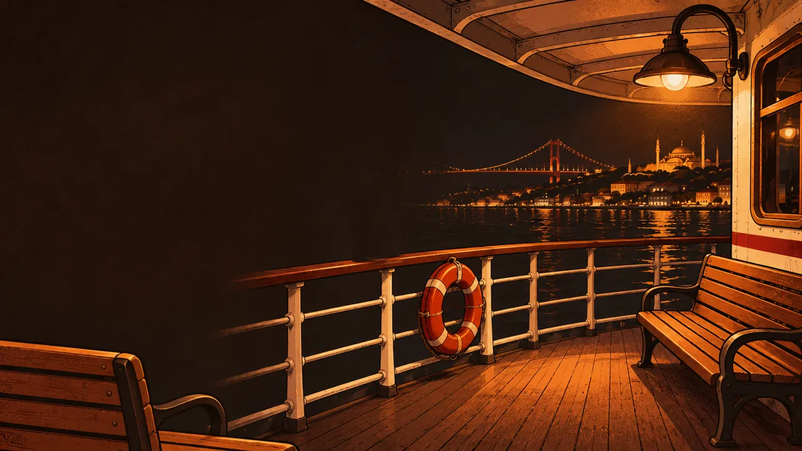

Demli Testi v1
Videoyu çekerken tarayıcıda canlı açtığım sunum. Her bölüm önce bir gece sahnesiyle açılır, sonra o bölümün simülasyonu oynar.
Hazırlanıyor. Yayına alınınca buradan açılacak.
On bölüm
- Demli Testi v1
- Kurallar
- Görev 1 · Tavla
- Görev 2 · Vapur
- Görev 3 · İznik çini
- Puan cetveli
- Sonuçlar
- Adisyon
- Hüküm
- Kapanış
Tuşlar
- →
- sonraki adım
- ←
- geri
- B
- bölüm menüsü
- N
- sunucu notları
- F
- tam ekran